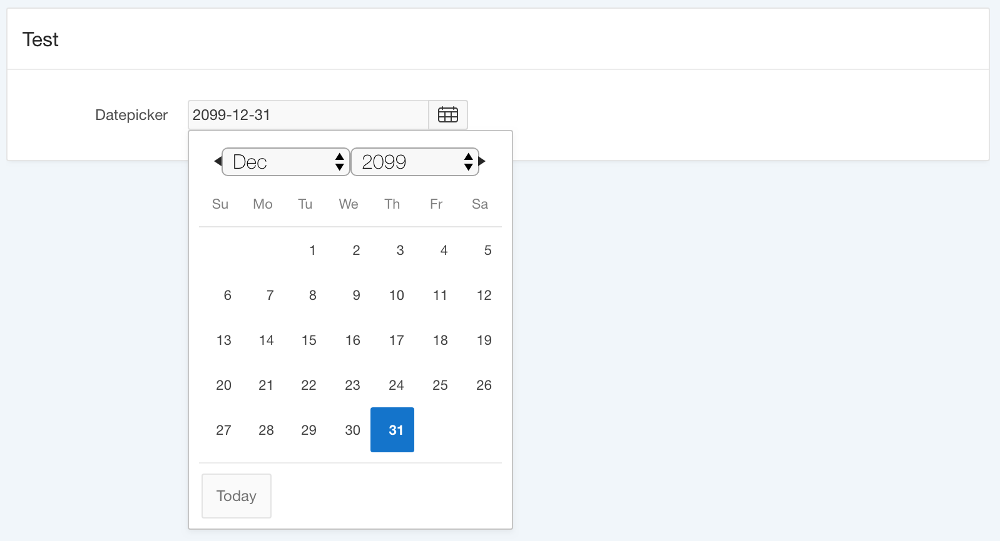

Show Today Button in APEX Datepicker
A short note on how to customize the jQuery UI datepicker
Maxime Tremblay has already described here how to customize the datepicker.
He had to deal with missing classes after changing options. I found this week a different way to customize the datepicker without loosing classes added by APEX: Simply by setting datepicker defaults on page load before any datepicker is initialized.
In my case I wanted to enable the button panel which shows two buttons - one to go to the current month which is called Today and a second one to close the datepicker which is called Done I only wanted the today button, so I had to provide beside the JavaScript or dynamic action some CSS to hide the second one:
apex.jQuery(document).ready(function(){
$.datepicker.setDefaults({ 'showButtonPanel': true });
});
body .ui-datepicker-close { display: none !important; }
Just for reference: The jQuery UI datepicker widget can be tested here. Be careful to pick the correct version of the jQuery UI API docs for your specific APEX version.
Happy coding :-)
Ottmar